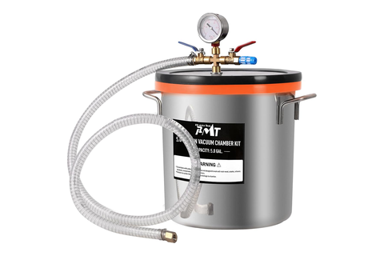
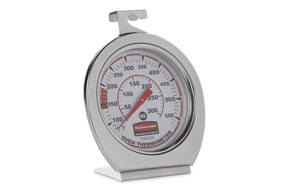

Pour + cure bench
the cold core's two PU foam pours · the hopper funnel's silicone
Tool station · 12/13Kitchen edition
Two pours share this bench and only one rises where
you can watch it. The PU foam is mixed 1:1
and poured into a cavity already bolted shut — the six screws through
the cap lid are the clamp. The silicone rises first instead, under vacuum,
and has to stop before the core comes down on it.
Foam
2-part PU 1:1 · 2 lb closed-cell
Silicone
platinum 1:1 by weight
Chamber
5-gal 18.9 L · no pump
Oven
50–500 °F shop only
Pour
The mix
Goes into
What it is really for
Cap foamCC-06
2-part PU, 1:1both caps, one after the other
The cap bolted mouth-up to the shell's top face — in through
the lid's ⌀20 mm hole, air out two
⌀6 mm vents
six M3 × 25 SHCS through lid and cap are the pour clamp
Each cap ends a 16 mm foam-filled cup.
Trim flush after cure, then back the six screws out.
Body foamCC-14
Same kit, 1:1poured all at once
The body's open top — outer gap, the ±Z corner pockets and
the tank cavity fill in parallel
bag pockets and both reed channels take none; beads squeeze out of the 0.5 mm bands
The foam is the vapor barrier over both temperature probes, so it has
to wet each probe and its lead entry with no void.
Degasno card yet
Platinum silicone, 1:1 by weight
Zone C hopper funnel
The 5-gal chamber —
18.9 L,
11.8″ × 11.8″ interior, on the
§6 Orion 4 CFM pump
a ~70 mL pour goes 3–4× in the cup before it falls back
Vacuum is the primary path, not a finishing touch: the open cavity is
pulled down before the core is lowered, so the deep spout fills
bottom-up.
Post-cureno card yet
~4 h @ ~200 °C392 °F · hopper-funnel-mold README
The demolded funnel, bare on the rack — dial
50–500 °F, top/bottom heaters
0–100 %the 60–580 °F probe reads the cavity, not the dial
This bake, not the room-temperature cure, is the food-contact gate
— it drives off the volatiles a wetted surface is screened for.
⚠
Nitrile
gloves on for both pours. The PU foam's isocyanate component is a
skin sensitizer.
One pump, two benches. The chamber has none of
its own — it mates the §6 Orion
4 CFM pump over
1/4″ SAE flare, shared with VC.
The foam's data sheet is an open item in
cold-core.md: pot life, cure time and pour temperature are not pinned.
The oven is shop-dedicated, not a food oven.
Have in hand

PB Motor Tech5-gal vacuum chamberNuwave Bravo30-QT convection

Rubbermaid60–580 °F probe
Why the batch cups are 32 oz — the sizing
is the rise, not the pour: ~70 mL stands at
3–4× under vacuum before it falls
back.